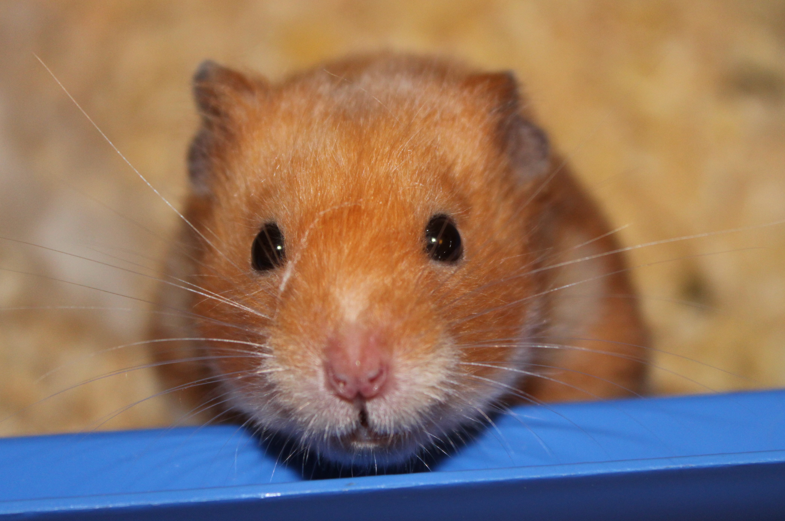

24-Oct-2017 | Milku
Koeman leaves...now, we're holding out for a hero...
Before my paws had even recovered from typing my last blog, Ronald Koeman was sacked as Everton manager. It started out so promisingly. But it was never meant to last. The Toffees really want someone who is passionate about the club not someone who is just biding his time before a better opportunity comes along. It's time to select a manager who'll revive their fortunes for a bit longer than a year.
I nearly choked on my hamster muesli when I saw that David Moyes was linked with a return to his former employer. Then, today, Phil Neville has suggested he'd like the opportunity.
Actually, I think I'd like to be manager...it'd be a harsh regime...no treats unless there's goals...
On a more positive note, 55 years ago today, Everton played their first European fixture. It was a victory! May there be many more.